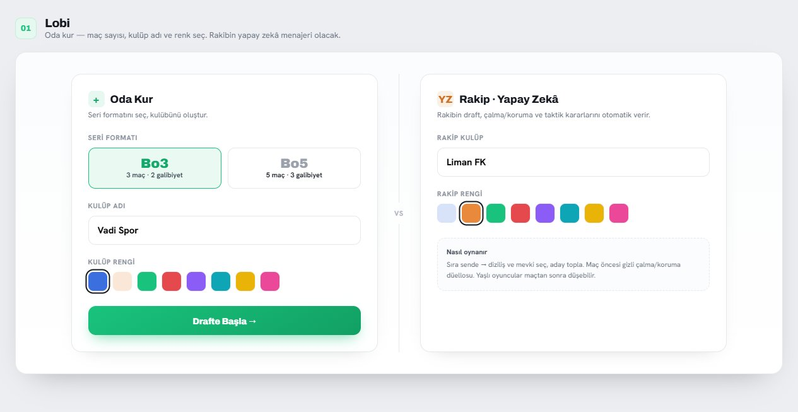
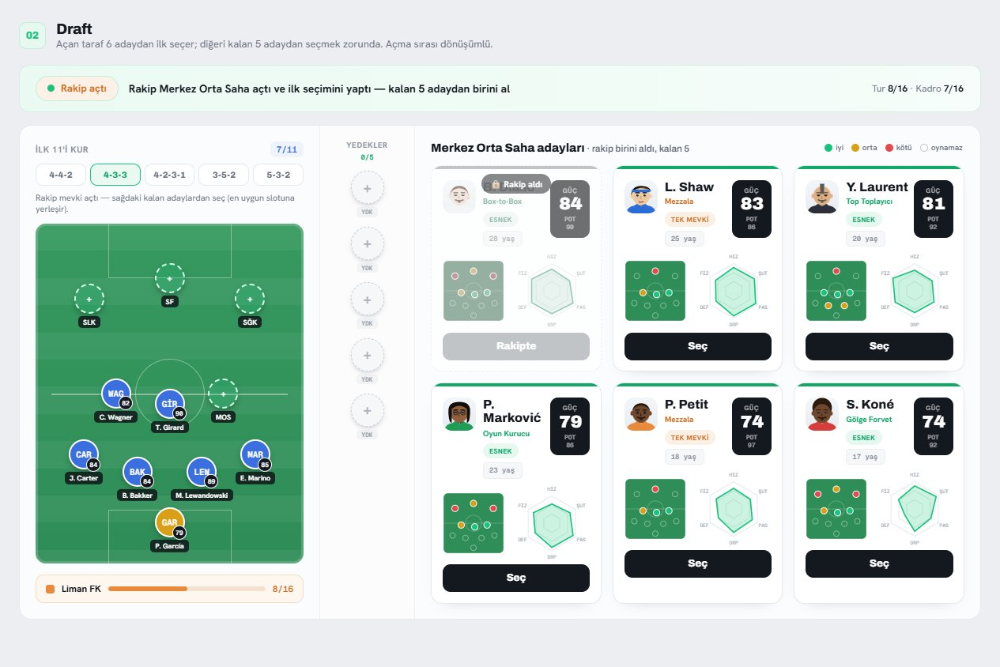
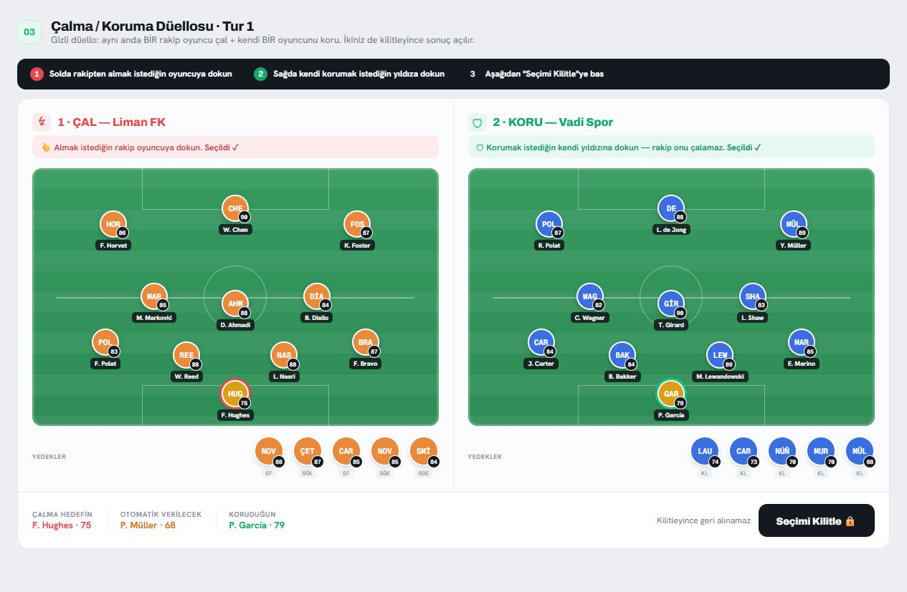
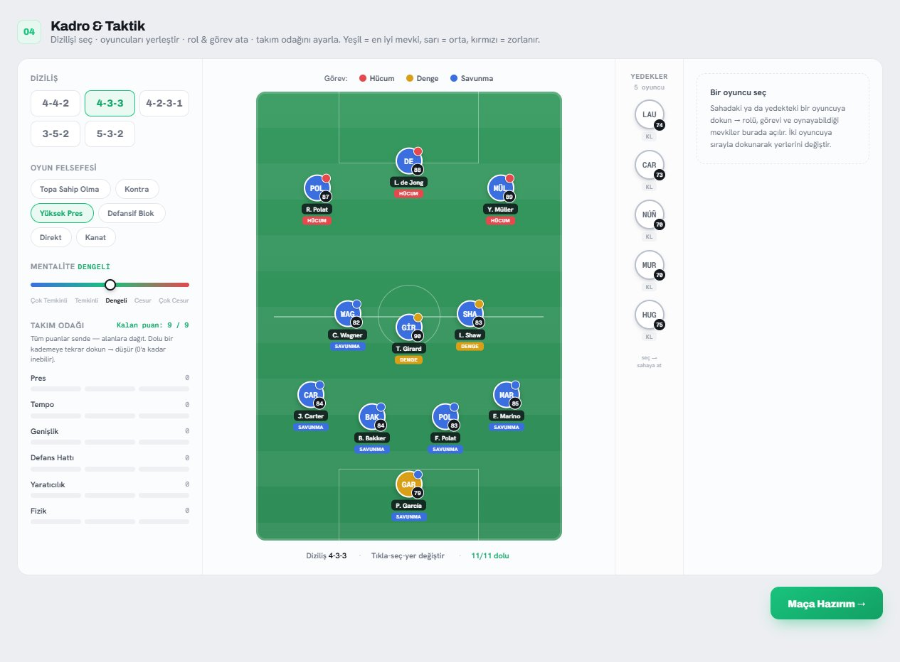
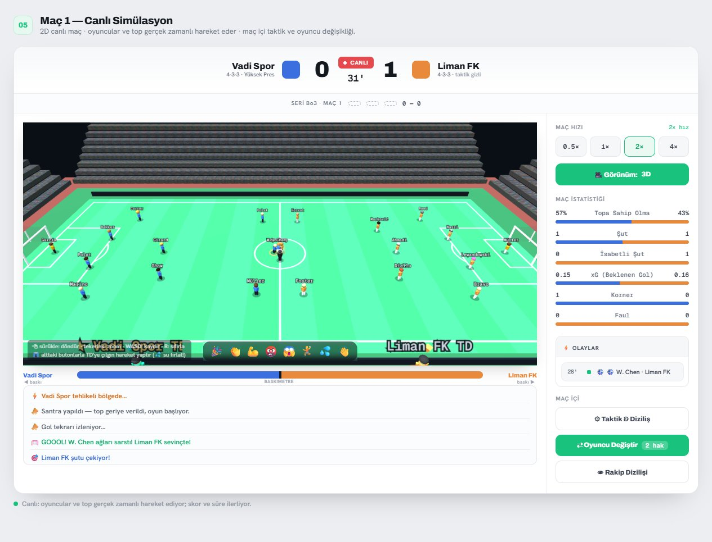
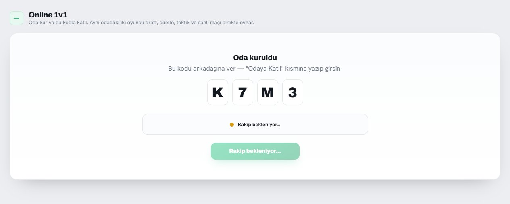

Nasıl Oynanır?
DraftVersus, tarayıcıda oynanan ücretsiz bir futbol draft ve taktik düellosu oyunudur. İndirme ve üyelik gerektirmez. Bir seri (Bo1 / Bo3 / Bo5) boyunca rakibinle kadro kurar, oyuncu çalar, taktik seçer ve maçları canlı izlersin.
1 · Lobi
Takım adını ve rengini seç, seri formatına karar ver: üç maçta iki galibiyet (Bo3) ya da beş maçta üç galibiyet (Bo5). Tek kişilik modda rakip kulübün adını ve rengini de burada belirlersin — draft, çalma/koruma ve taktik kararlarını yapay zekâ verir. "Drafte Başla" dediğin anda seri başlar.

2 · Draft — kadronu kur
Sıra sende olduğunda mevkiye uygun aday oyuncular arasından seçim yaparsın. Her oyuncunun genel gücü (OVR) ve mevkisi vardır; dizilişine göre dengeli bir kadro kurmaya çalış. Diziliş seçimini draft sırasında değiştirebilirsin.

3 · Düello — çal ve koru
Draft bittikten sonra düello aşaması gelir: rakibinin kadrosundan oyuncu çalmayı deneyebilir, kendi yıldızlarını koruyabilirsin. Doğru oyuncuyu korumak, en iyisini çalmak kadar önemlidir.

4 · Taktik
Maçtan önce dizilişini, oyun anlayışını (hücum/denge/savunma), presini ve oyuncu görevlerini ayarla. Rakibin taktiği maç başlayana kadar gizlidir.

5 · Maç — canlı izle, müdahale et
Maç, motor tarafından gerçek zamanlı simüle edilir; 2D veya 3D görünümde izleyebilirsin. Maç sırasında sınırlı sayıda müdahale hakkın vardır: oyuncu değişikliği, taktik/diziliş değişimi. Yorgunluk, sakatlık, kartlar ve baskı maçın gidişatını etkiler. Devre arasında da hamle yapabilirsin.

6 · Sonuç ve gelişim
Seri sonunda maç maç skorlar, serinin oyuncusu ve gelişim gösteren futbolcular listelenir. Rövanş ile yeni bir seriye hemen başlayabilirsin.
Online 1v1 — arkadaşınla oyna
Tek kişilik moddaki tüm aşamalar (draft, çalma/koruma, taktik, canlı maç) online modda da geçerlidir — tek fark, rakibin yapay zekâ değil gerçek bir oyuncu olur. Ana ekranda "Online Oyna"yı seçerek başlarsın.

Oda kurma ve katılma
- Oda kur: "Oda Kur" sekmesinde seri formatını (Bo3/Bo5), kulüp adını ve rengini seç → sana yukarıdaki gibi 4 haneli bir kod verilir.
- Kodu paylaş: Kodu arkadaşına ilet (WhatsApp, Discord, nasıl istersen).
- Katıl: Arkadaşın "Odaya Katıl" sekmesine kodu yazıp girer — ikiniz aynı odaya düşersiniz.
Online maç nasıl akar?
- Sırayla ve canlı: Draft'ta seçimler dönüşümlü yapılır; her ikinizin hamlesini de anlık görürsünüz. Çalma/koruma düellosunda seçimler gizlidir, ikiniz de kilitleyince sonuç açılır.
- Senkron başlangıç: Canlı maç, iki taraf da taktiğini bitirip "Hazırım" demeden başlamaz — kimse hazır olmadan öne geçemez.
- Tek otoriter maç: Maçı tek bir taraf (oda kuran) simüle eder ve karşıya canlı yayınlar; böylece iki ekranda da aynı skor, aynı olaylar görünür. Maç içi taktik/oyuncu değişikliği hakların burada da geçerli.
- Bağlantı: Rakip oyundan ayrılır ya da bağlantısı koparsa bilgilendirilir ve ana menüye dönersin.
İpucu: Online mod için oyunu sunucu adresi üzerinden (draftversus.com) açmalısın; dosyadan (file://) açılırsa online çalışmaz. Tek kişilik yapay zekâ modu ise internet olmadan da çalışır.